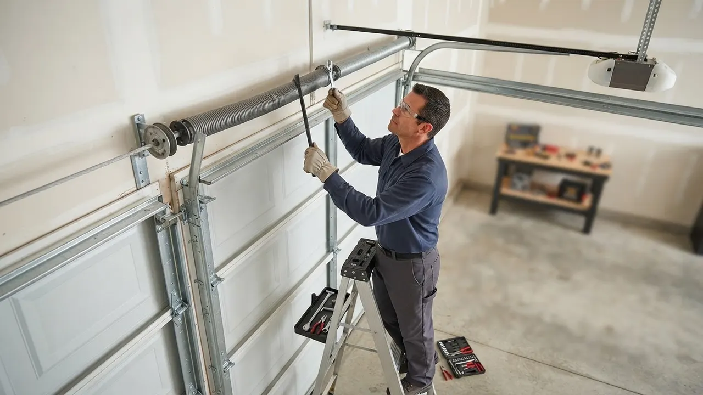

Your local team · Riverfront
Garage Door Repair in Riverfront Done Right the First Time
Garage Door Repair in Riverfront means a truck at your door with the right springs, cables and openers on board, not a two-week wait for a part. We work the condos at Justison Landing, the townhomes off Riverfront East and the commercial bays near Frawley Stadium. A snapped torsion spring or a door stuck half-open gets fixed the same day you call. One call to (302) 556-5080 and we roll.
Local knowledge
Garage Door Repair in Riverfront, DE You Can Count On
Garage Door Repair in Riverfront is what we do every week, from the newer complexes at Christina Landing to the commercial roll-up doors near the Chase Center on the Riverfront. We started in 2010 and have spent 16 years working New Castle County, so we know how the humidity off the Christina River treats torsion springs, hinges and galvanized steel cables. It rusts them faster than inland Wilmington, and that means more snapped cables and frozen hinges than most homeowners expect. Our trucks carry LiftMaster, Chamberlain and Genie openers, plus Clopay and Amarr panels, so most jobs finish in one visit. If you need garage door service near Riverfront, whether it is a stripped gear in an opener or a door off track, we handle it. We also cover Riverfront Garage Door Repair calls for the high-end condos that need premium door aesthetics, not a mismatched panel bolted on.

Services available in Riverfront
Garage Door Services We Run Across Riverfront
Every service below is delivered in Riverfront by our own technicians, not subcontracted out. If you have been searching for Garage Door Repair in Riverfront near me and want a crew that already knows the buildings, the parking and the gate codes, this is the list. We handle everything from a single noisy roller to a full custom door install on a new build.
01
Garage Door Repair
General repair across Riverfront East, Riverfront West and the condo buildings near the water. We diagnose the actual failure first, whether that is a broken torsion spring, a snapped cable or a bent track bracket, then fix it with parts on the truck. Most repairs finish in one visit.
View service 02Garage Door Installation
New door installs for the frequent new construction around Riverfront. We set the track, level the panels, tension the springs and test the balance before we leave. Clopay and Amarr doors are our most common picks for this area because they hold up to river humidity.
View service 03Garage Door Opener Repair
Opener repair for the LiftMaster, Chamberlain and Genie units common in Riverfront condos and townhomes. Stripped gears, dead logic boards and worn chains all get sorted. We test the safety reverse before we call it done.
View service 04Garage Door Opener Installation
New opener installs sized to your door weight and ceiling height. In the tighter Riverfront garages, we often fit a belt-drive unit for quieter operation in shared walls. We wire it to NEC electrical code and set the travel limits correctly.
View service 05Garage Door Spring Repair
Torsion and extension spring replacement is our most common Riverfront call. The river humidity corrodes springs faster here, so we fit oil-tempered replacements rated for the door weight. We use winding bars and C-clamps and never rush a spring job.
View service 06Garage Door Cable Repair
Snapped or frayed galvanized steel cables get replaced in pairs, because if one failed the other is close behind. We check the cable drums and bearings while we are in there. Common in the older sections of Riverfront West.
View serviceBuilt around the city
How We Run Garage Door Repair in Riverfront
Execution in Riverfront comes down to access and timing. The condo and townhome buildings around Justison Landing and Christina Landing often have shared driveways or gated entries, so we call ahead to confirm the gate code and where to park the truck without blocking a neighbor. In the commercial stretch near the Riverwalk, we schedule around business hours so a loading door is not down during a delivery window. Every install and repair follows UL 325 for the safety reverse and ANSI/DASMA 102 for the door itself, and opener wiring is done to NEC electrical code. If you need 24/7 garage door repair Riverfront DE for a door stuck open overnight, we dispatch after hours and secure the opening first. Our vans carry torsion springs, galvanized steel cables, nylon rollers and hinges, so a typical repair is one trip. We measure with a tape measure and level on every track reset, and we torque brackets with a socket wrench set rather than guessing.
The moisture off the Christina River corrodes torsion springs, hinges and galvanized steel cables faster than inland areas, so parts that would last years elsewhere fail sooner here. That means more snapped cables and frozen hinges on Riverfront doors. We fit oil-tempered springs and inspect cables and hinges on every visit, not just the part you called about. If a cable is starting to fray, we flag it and replace the pair before it strands you. A yearly tune-up with fresh lubricant slows the rust down.
Parking decks and shared garages at Justison Landing and Harlan Flats leave little room to swing a door or set up a ladder. A door that comes off track in a tight bay is harder to reset safely. We confirm access and parking before we arrive, and we bring low-profile tools for tight bays. For off-track doors, we secure the door first, then reset rollers and track with a level and tape measure. We keep the work area clear so neighbors can still get in and out.
The premium condos around Christina Landing and Riverfront East care how a repaired door looks, not just that it works. A mismatched panel or a cheap hardware swap shows from the street. We match panel color and profile before ordering, using Clopay and Amarr options that fit the building. For visible hardware, we use finishes that match the original. If a dent can be worked out cleanly, we do that instead of a panel swap to keep the door original.
Every opener we install or repair has to pass the safety reverse test under UL 325. We test it before we leave, because a door that fails to reverse on contact is a hazard, especially in buildings with kids and pets around the shared driveways.
This standard covers door construction and installation, and it guides how we set track, springs and hardware. Following it keeps the door balanced and safe, which matters more in the high-cycle commercial doors near the Riverwalk than on a home door.
Opener wiring and any new outlet for a garage door motor must meet NEC electrical code. We handle the wiring correctly so an inspection passes and the circuit is safe, which is common on the new construction around Riverfront.
Common local problems
Common Garage Door Problems in Riverfront
Broken torsion spring from humidity-driven corrosion
Snapped or frayed galvanized steel cables
Opener motor failure and stripped gears
Sensor misalignment and remote or keypad failures
Warning signs
Signs You Need Garage Door Repair in Riverfront
This is almost always a sensor misalignment or a dirty sensor eye, and it is the most common opener complaint we get. The door thinks something is in the way. It is a quick fix, usually under an hour, but until it is sorted the door will not close reliably, which is a security gap.
That bang is usually a broken torsion spring. The door becomes too heavy for the opener and may hang half-open. Do not keep running the opener, because it will burn out the motor. Call us and we will replace the spring and check the cables the same day.
Grinding points to worn rollers or dry hinges, and squealing often means a dry spring or a failing bearing. Left alone, the friction strains the opener and shortens its life. A lube and roller swap quiets it and buys you years on the opener.
A door that sags after closing is out of balance, usually because a spring has lost tension or a cable is slipping. It is a sign the springs are near the end of their life. We rebalance the door and check the springs before they snap.
A loose or frayed cable is a safety issue and a sign the drum or cable is failing. Do not operate the door, because it can come off track and fall. We replace cables in pairs and inspect the drums, which is common work in the older Riverfront West buildings.
Pricing and expectations
What Garage Door Repair Costs in Riverfront
Typical 2026 pricing in Riverfront runs $180 to $450 for most repairs, with spring replacements and opener motor swaps at the higher end and sensor or remote fixes at the lower end. A standard torsion spring replacement usually lands between $250 and $400 depending on door weight and whether we replace one or both springs. New opener installs run $350 to $700 with the unit, and a full door install is a bigger number that we quote after measuring. Riverfront's humid air means we often find a second issue, like a fraying cable, while we are in there, and we tell you the cost before we touch it. If you want affordable garage door repair Riverfront DE without surprise add-ons, we price the job upfront and stick to it.
A heavier insulated door needs higher-cycle springs, which cost more than standard ones. In Riverfront, the newer condos often have insulated doors, so spring jobs there can run toward the top of the range. We match the spring to the door weight so it lasts.
Common parts like torsion springs, cables and rollers are on the truck, so those jobs stay in the standard range. A specialty panel or a custom door part may need ordering, which adds a day or two and sometimes cost. We tell you before we order.
A standard weekday call is priced normally. After-hours emergency work, like a door stuck open at 2 a.m., carries a higher rate because we dispatch a technician outside normal hours. We quote the emergency rate before we roll.
We know the route
Getting Around Riverfront: Landmarks We Use
Riverfront is compact, but the one-way streets and gated entries can slow a truck down. We use the big landmarks to orient and route: Riverfront Park and the Riverwalk mark the water side, Frawley Stadium and the Chase Center on the Riverfront anchor the north end, and the Delaware Children's Museum sits right in the middle of the residential cluster. Knowing these lets us pick the fastest approach to your building and avoid the event-day traffic that backs up around the stadium and the Chase Center.
Riverfront Park
A waterfront park along the Christina River that we use as a reference point for the streets and condo buildings on the water side of Riverfront. It helps us route to addresses near the Riverwalk without circling.
Frawley Stadium
The ballpark at the north end of the Riverfront. We use it to orient for addresses in that corner and to plan around game-day traffic, which can slow access to nearby streets.
Chase Center on the Riverfront
A convention center that anchors the north Riverfront. It is a useful landmark for routing to the commercial and residential addresses around it, and event days change the traffic pattern we plan for.
Delaware Children's Museum
A museum in the middle of the residential cluster. It is a handy reference for finding the condo and townhome streets nearby, and it helps us pick the right turn off the main road.
Riverwalk
The paved path along the Christina River that ties the Riverfront together. We use it to orient for the buildings that face the water and to avoid the pedestrian-heavy stretches when routing the truck.
Riverfront commercial district
A mixed commercial and residential district along the Christina River with restaurants, offices and venues near the Riverwalk and the Chase Center. Several buildings here use heavy-duty roll-up and sectional doors for service and loading access.
Riverfront service coverage
Riverfront Neighborhoods We Cover Every Week
We run these neighborhoods constantly, so we know the buildings, the parking and the gate codes. Whether you are in a newer condo at Christina Landing or a townhome in Riverfront West, a technician is close by and usually on site within the hour.
Justison LandingChristina LandingRiverfront WestHarlan Flats
Delaware Express Garage Door Service3601 Old Capitol Trl A5, Wilmington, DE 19808, United States, Wilmington, Delaware
Local results
Recent Garage Door Repair Jobs in Riverfront
A condo owner at Christina Landing came home to a door stuck half-open with a snapped torsion spring. The door was too heavy to lift by hand and the opener was straining.
We secured the door with C-clamps, replaced both torsion springs with oil-tempered units rated for the door weight, and reset the tension with winding bars. Then we checked the cables and drums, which showed early rust from river humidity, and lubricated the hinges and rollers. The door was balanced and running smoothly in about two hours. The owner avoided a full door replacement and the opener stopped straining.
A townhome in Harlan Flats had an opener that ran but would not lift the door. The motor spun and the chain moved, but the door stayed put.
We opened the opener housing and found a stripped gear and worn sprocket. We replaced the gear kit, re-greased the drive and checked the door balance, which was slightly off and had contributed to the wear. We adjusted the springs and set the travel limits. The opener lifted the door cleanly on the first test, and the noise dropped noticeably. Total job was under 90 minutes.
A commercial loading door near the Riverwalk was stuck open during a delivery window, a security and operations problem for the business.
We responded the same morning, found a frayed galvanized steel cable that had jumped the drum, and replaced the cable and the worn drum. We checked the other side, replaced that cable too, and re-leveled the track with a level and tape measure. The door was back in service before the afternoon delivery, and the business avoided a full day of downtime. We scheduled a follow-up tune-up to keep it running.
Notes from local customers
What Riverfront Customers Say
My door snapped a spring on a Sunday morning and I could not get the car out. Called these guys and they had a tech at my building in about an hour. He replaced both springs, checked the cables and had me running again before lunch. Fair price and no upsell. I will use them again.
Our opener died and the door was stuck open overnight. They came out same day, found a stripped gear, and had the part on the truck. The tech also noticed our hinges were rusting from the river air and lubed everything. Honest and quick. Highly recommend for anyone in the condos here.
Had a dented panel from a bumper tap in a tight garage. They matched the panel color perfectly and you cannot tell it was ever damaged. Took a little longer to get the matching panel, but the install was clean and they tested everything. Good communication the whole way.
Plan for the season
How Riverfront Seasons Affect Your Garage Door
Book a tune-up in early spring to lube the springs, hinges and rollers and check the balance before the humid months. Catching a fraying cable now saves a mid-summer breakdown.
Keep the door hardware lubricated and clear the area around the sensors. If the door starts reversing or grinding, call us before the opener burns out from the extra strain.
Clear leaves and debris from the tracks and get a tune-up before the first freeze. A fall service call catches the wear that would otherwise turn into a winter emergency.
Keep the bottom seal clear of ice and avoid forcing a frozen door. If the door will not budge, call us rather than running the opener, which can strip the gear or burn the motor.
Nearby service areas
Nearby Cities We Cover From Riverfront
Riverfront sits in the middle of our Wilmington service area, so we cover the surrounding neighborhoods on the same routes. If you are just outside Riverfront, we likely already work your street. Here are the nearby areas we serve from here.
Before you hire
Questions to Ask Before Hiring a Garage Door Pro
Are you licensed and insured in Delaware?
Do you carry the parts on the truck, or will you order them?
Will you check the door balance before replacing the opener?
Do you test the safety reverse before you leave?
Is the price quoted upfront, and does it include the parts?
Trust and compliance
Licensed, Insured and Local
Delaware contractor license
DASMA certification
Door and Access Systems Manufacturers Association
IDEA certification
Institute of Door Dealer Education and Accreditation
New Castle County Chamber of Commerce
member
Riverfront Wilmington Business Association
member
Most repairs in Riverfront run $180 to $450 in 2026, with spring replacements around $250 to $400 and sensor or remote fixes at the low end. New opener installs run $350 to $700 with the unit. We quote the price upfront and stick to it, so you know the number before we start.
The best choice is a licensed, insured local company that stocks parts and tests the safety reverse before leaving. We have served Riverfront since 2010, carry LiftMaster, Chamberlain and Genie parts on the truck, and cover ZIP codes 19801 and 19802. Call (302) 556-5080 and judge for yourself.
Yes. We run emergency calls 24/7 across Riverfront for doors stuck open, off track or blocking a vehicle. After-hours work carries a higher rate, which we quote before we dispatch. Call (302) 556-5080 any time and we will send a technician.
Yes, for most jobs booked before early afternoon. Because our routes cover Riverfront and the nearby ZIP codes, a technician is usually close and can be on site within the hour during normal hours. We stock springs, cables, rollers and openers so most repairs finish in one visit.
Yes. Spring replacement is our most common Riverfront call, and we carry torsion and extension springs on the truck. We match the spring to your door weight, replace them safely with winding bars and C-clamps, and check the cables and drums while we are in. Most spring jobs finish in about two hours.
Your next step is waiting
Call for Garage Door Repair in Riverfront Today
A broken spring or a stuck door does not wait, and neither should you. We have served Riverfront since 2010, we are licensed and insured in Delaware, and we stock the parts to fix most doors in one visit. Whether it is a snapped cable at Christina Landing or an opener down at Justison Landing, call (302) 556-5080 and we will get a technician to you, often the same day. Upfront pricing, no surprises.
Start with the basics
Call For Garage Door Service
Call (302) 556-5080 and tell us what your door is doing. We answer during business hours and run emergency calls after hours. Most days we can get a tech to you the same day, and we will give you a window, not a maybe.